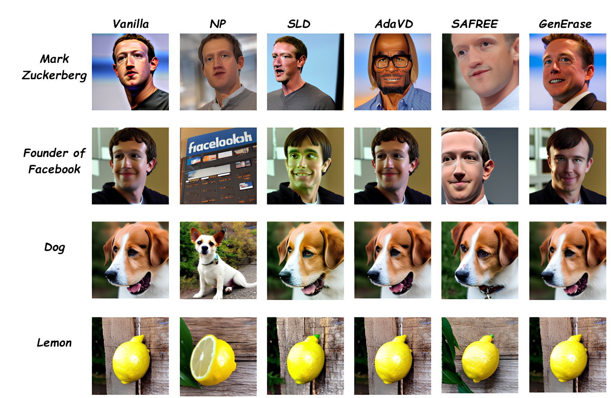
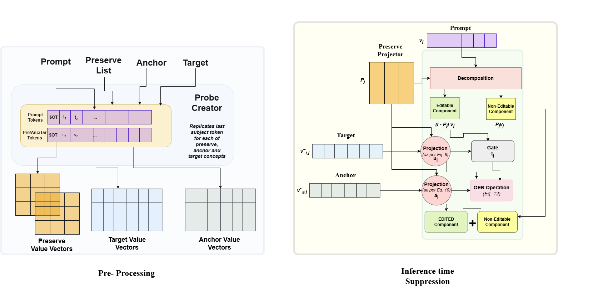

GenErase: Generalizable and Semantically-Aware Concept Erasure in Diffusion Models

Text-to-image diffusion models can generate highly realistic content, but they may also reproduce unsafe, private, copyrighted, or restricted concepts learned from large-scale training data. Concept erasure aims to suppress such target concepts while preserving the model’s ability to generate unrelated content faithfully. This becomes especially challenging when the target is referred to indirectly through paraphrases, aliases, or contextual descriptions rather than by its literal name.
GenErase addresses this challenge as a training-free, inference-time guard-railing method. Instead of modifying model weights or retraining the diffusion model, GenErase intervenes directly in the cross-attention value space. It identifies target-aligned semantic components, protects user-specified preserve concepts, and replaces erased target directions with neutral anchor directions. This enables precise, interpretable erasure while maintaining visual fidelity and preserving non-target concepts.
GenErase is built around three geometric operations. First, a token-wise preserve projector defines a safe semantic subspace, protecting related or important non-target concepts from unintended edits. Second, a hard geometric gate activates erasure only when a token is strongly aligned with the target concept. Third, an orthogonal erase-and-replace operation removes the target component and redistributes it along a neutral anchor direction, preventing feature collapse and improving generation stability.

GenErase achieves strong erasure while preserving unrelated visual semantics across identity erasure, object erasure, and unsafe-content suppression. In single-celebrity erasure, GenErase obtains an average ESR of 81.83 and the best average harmonic mean of ESR and PSR, with an HM of 40.22. On GenBench-40, GenErase achieves the lowest average failure rate of 22.70, demonstrating improved robustness to paraphrases and contextual descriptions. It also scales to simultaneous erasure of 50 identities with only a small drop in harmonic mean.


BibTeX
@inproceedings{korada2026generase,
title = {GenErase: Generalizable and Semantically-Aware Concept Erasure in Diffusion Models},
author = {Korada, Sri Vardhana and Biswas, Soma},
booktitle = {Proceedings of the IEEE/CVF Conference on Computer Vision and Pattern Recognition},
year = {2026}
}